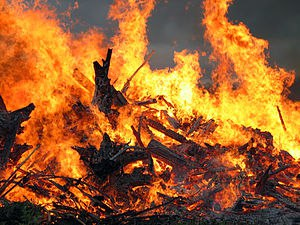
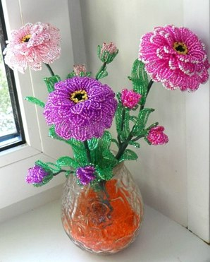

Гарячі новини!
Увага!!! В учениці 1-а класу нашої школи сталася біда! В неї сталася пожежа, а тому вона потребує нашої матеріальної допомоги. 27-30 жовтня будуть проводитись збори коштів. Не будьте байдужими.

Гурток «Бісеринка» запрошує усіх бажаючих! Якщо ви любите бісероплетіння або хочете навчитися цьому мистецтву, тоді ми вас чекаємо. Завдяки нам ви навчитеся створювати шедеври своїми руками. Заняття проходять кожного понеділка і четверга у 3 кабінеті.
2 жовтня понад 100 держав у світі відзначають День вчителя, і Україна не виключення. На цьому тижні планується святкування професійного свята усіх працівників сфери освіти і у нашій 17 школі. Цей день покликаний привернути увагу до становища вчителів у суспільстві, їх ролі в освіті та розвитку. Адже вчителя — це не тільки люди, які викладають науки, вчителя — це наставники молодого покоління, які готують їх до дорослого життя. День вчителя, мабуть, найулюбленіше свято не тільки самих вчителів, а й учнів. Це день квітів, привітань, яскравих стінгазет та святкових концертів, які готують учні. А тому ми хочемо запропонувати усім учням підготувати святкові стінгазети з цікавими побажаннями і привітати усіх вчителів нашої школи з цим чудовим святом.

25 жовтня відбудуться вибори президента школи. Усі бажаючі мають подати свої заявки до 12 жовтня. В них слід зазначити ваше імя, прізвище, клас та причини, чому саме вас мають обрати. Також, 20 жовтня в кабінеті фізики відбудуться дебати, де усі кандидати будуть ділитися своїми цілями. За додатковою інформацією звертатися у піонерську.
Чекайте. Скоро в дім сайту Школи №17 прийде оновлення. Прийдуть нові функції та технології, що зроблять сайт динамічним та неповторним. Різні функції зроблять цей сайт цікавішим, що Ви не захочете з нього виходити!